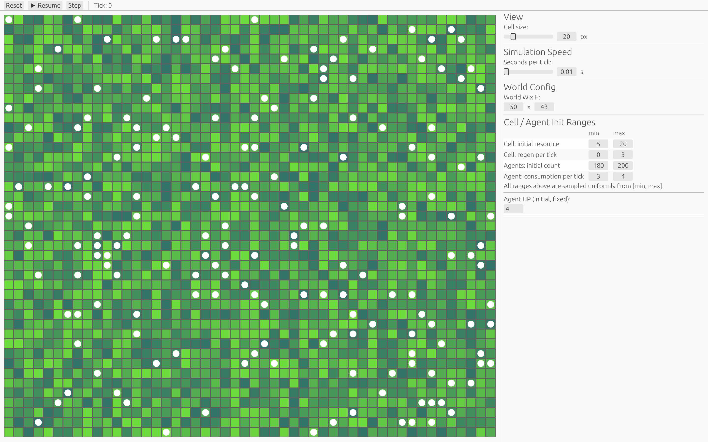
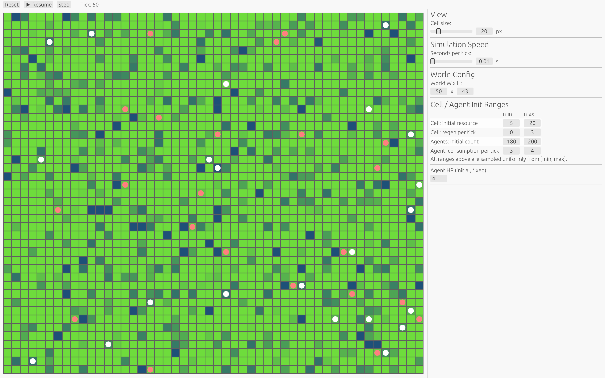
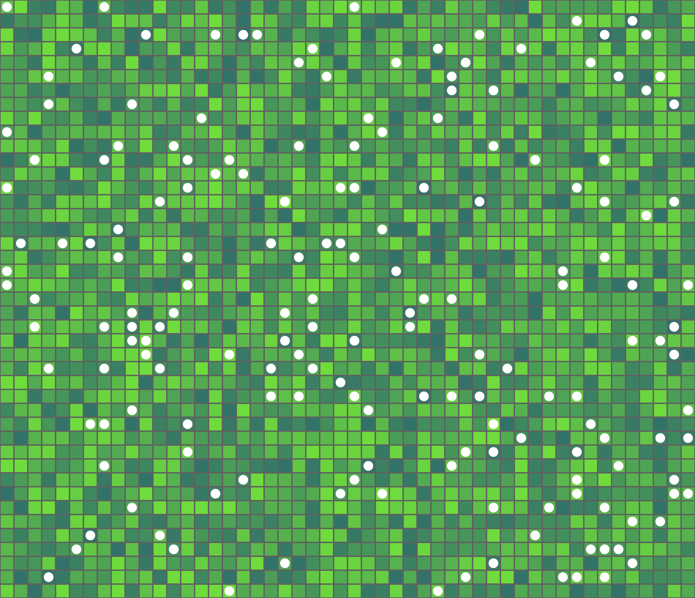
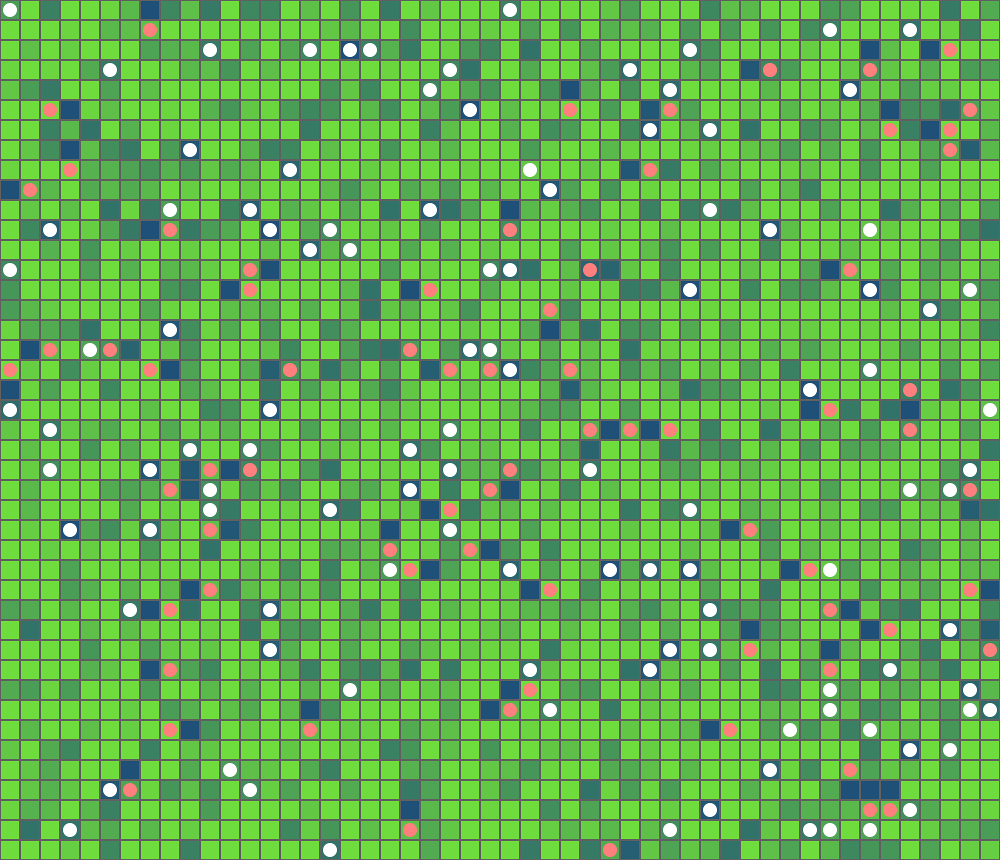
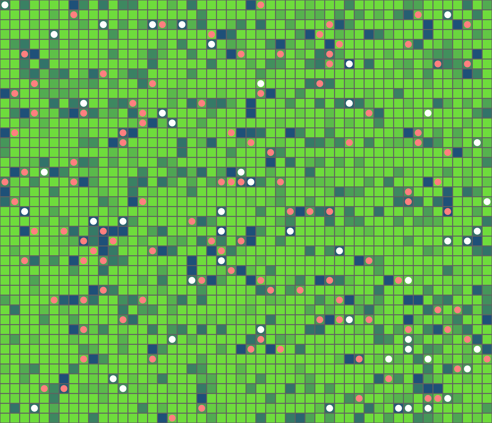
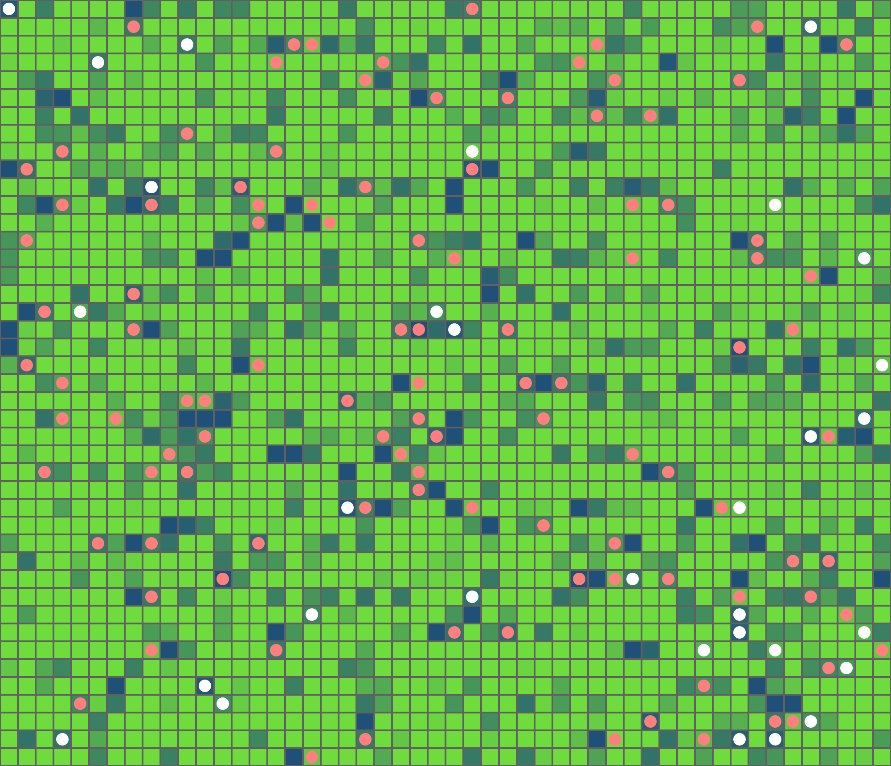
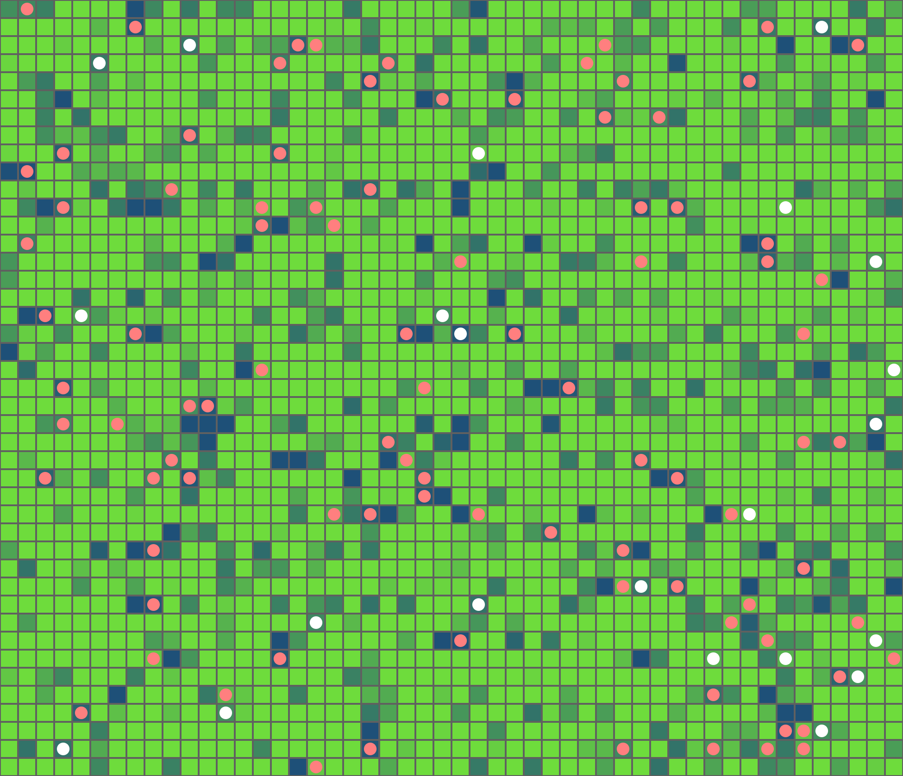
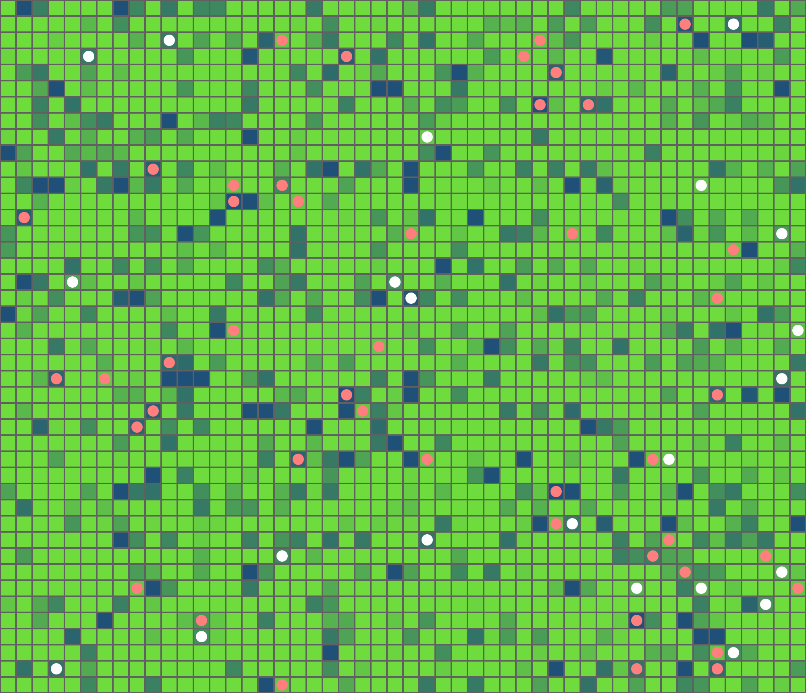
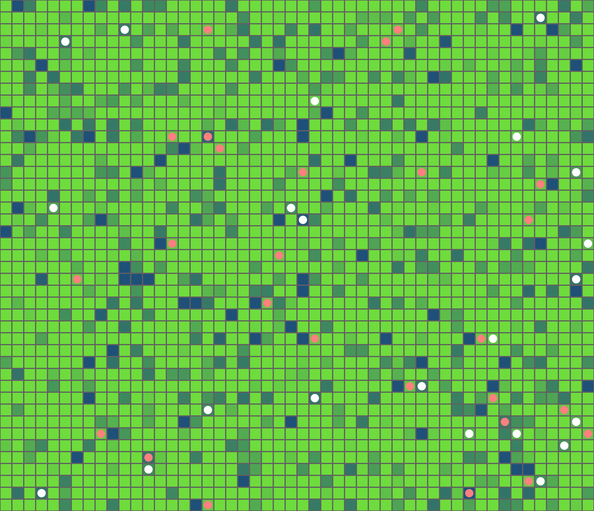

Hello! My name is Jiesui Chen. I am a student at Portland State
University majoring in Computer Science. My interests include
programming, 3D modeling, and game development.
Experience and Skills
Through my academic coursework, I have gained programming experience
in C++, C#, C, Python, and Rust, and have worked on several small
projects using these languages. Outside of school, I have explored 3D
modeling with Blender and have also learned some basic concepts of
Unity game development.
Projects
2D Resource Competition Simulation
This Rust-based project was completed for CS 423: Rust Programming.
It is a 2D simulation program that models feedback loops among
resources, agents, and the environment. This project helped me
practice Rust programming, simulation logic, and structuring
interactions between multiple system components.

Initial state of the 2D resource competition simulation at tick
0. White agents are distributed across the 50x43 resource grid,
with the control panel shown on the right.

Simulation state at tick 50. Red and white agents show changes
in health and resource distribution across the 50x43 grid, with
the control panel on the right.

Tick 0: Initial simulation state with randomly distributed
resources and agents.

Tick 5: Early resource competition begins as underfed agents
start moving toward richer neighboring cells.

Tick 10: Local agent movement increases, producing early
shifts in spatial distribution.

Tick 15: Resource competition intensifies as more agents
cluster around higher-resource cells.

Tick 20: Death feedback begins reshaping the resource field
as dead agents return value to occupied cells.

Tick 25: Resource-rich patches and agent redistribution
become more apparent across the grid.

Tick 30: Later-stage simulation state showing the combined
effects of competition, movement, and death feedback.
This MERN project was developed as part of another course. My
brother and I built a web-based real-time messaging platform using
the MongoDB, Express, React, and Node.js stack. I was primarily
responsible for front-end development, during which I used large
language models to learn relevant concepts and troubleshoot coding
issues. Through this experience, I gained a basic understanding of
front-end and back-end interaction, as well as the underlying
technologies involved.